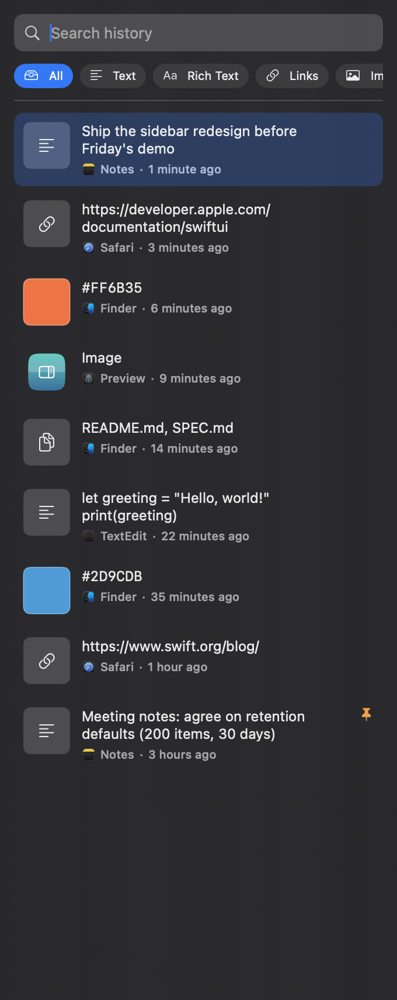
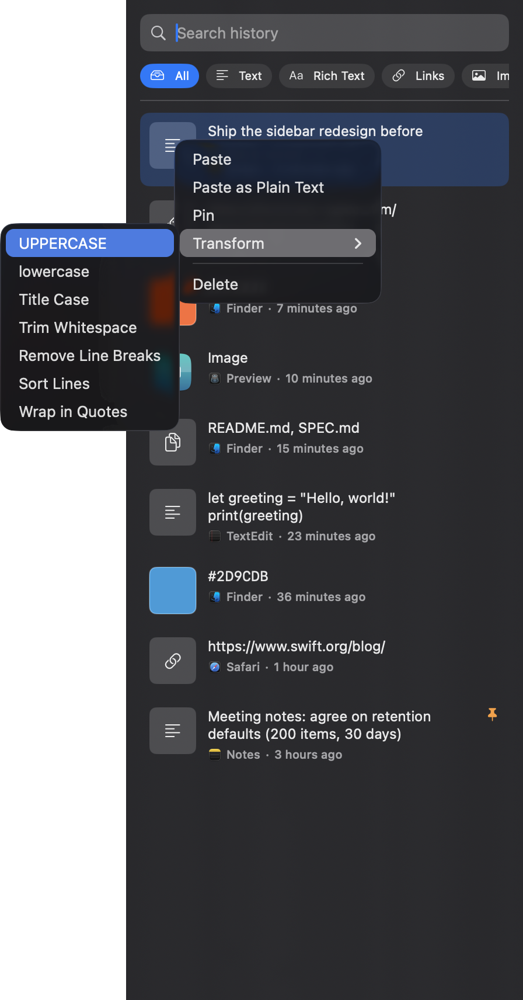
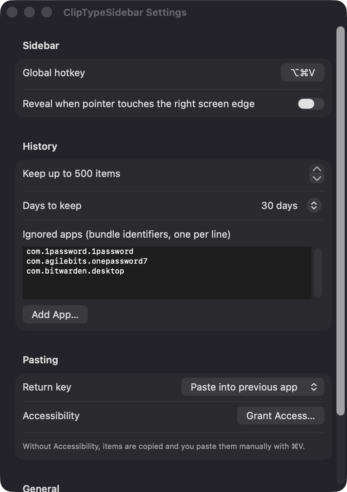

Automatic type sorting
Each copy is classified as text, rich text, link, image, color or file list. Filter chips and search narrow the list quickly.
Open source · macOS 14+ · Universal binary · Clipboard
A docked sidebar that sorts everything you copy into text, links, images, colors and files. Press ⌥⌘V to open it, then hit Return to paste back into the app you were using.
Free & MIT licensed · Apple Silicon & Intel · Latest release

Features
Everything below is in the app today and runs locally on your Mac.
Each copy is classified as text, rich text, link, image, color or file list. Filter chips and search narrow the list quickly.
A 340 pt panel opens from the right edge by hotkey, from the menu bar, or optionally by pushing the pointer against the screen edge.
Right-click an item to apply UPPERCASE, lowercase, Title Case, Trim Whitespace, Remove Line Breaks, Sort Lines or Wrap in Quotes.
Use the arrow keys to move, Return to paste, Shift+Return for plain text, Command-P to pin and Command-Delete to remove.
Items flagged as concealed or transient are skipped, and 1Password and Bitwarden are ignored by default. You can add more ignored apps.
Keep 50 to 500 items and expire them after 1 to 365 days, or never. Pinned items are never expired or cleared.
Screenshots


Install
ClipTypeSidebar is open source and not notarized with a paid Apple Developer ID, so macOS needs one extra step the first time.
xattr -cr /Applications/ClipTypeSidebar.app
Download
Free, forever. Built for macOS 14 Sonoma or newer, Apple Silicon and Intel.
Not notarized: on first launch right-click ClipTypeSidebar.app → Open.
FAQ
Yes. It is free and released under the MIT license, with the full source on GitHub. There are no accounts, subscriptions or paid tiers if it saves you time, you can optionally support development through Ko-fi.
Only Accessibility, and only if you want it to paste directly into the app you were using, since it sends a synthetic Command-V. It asks on demand with an explanation first. Without it, the item is copied and you paste manually. Launch at login is also optional.
Only on your Mac. History is a JSON file in ~/Library/Application Support/ClipTypeSidebar, with copied images saved as PNG files beside it. The code contains no networking, so nothing is uploaded.
Notarization requires a paid Apple Developer account, which this free project does not have. Right-click the app and choose Open once to launch it, or build it yourself from source with Xcode and XcodeGen.
Yes. ClipTypeSidebar was generated by Claude Code from a written spec as a clean-room reimplementation, with no code or assets from any commercial app. The full source is on GitHub under MIT, so you can read every line before you run it. It has had less human review than a hand-written app, so bug reports are welcome.
Support ❤️
ClipTypeSidebar is a free, open-source alternative to paid utilities. If it earns a spot on your Mac, a coffee keeps the updates coming.
☕ Support Or on Ko-fi